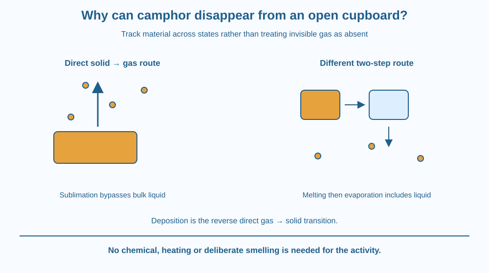

Explain sublimation, the direct transition from solid to gas under relevant conditions. Distinguish it from melting, evaporation and a chemical reaction. Use camphor as a conceptual example without handling, heating or deliberately smelling it.
A camphor piece left in an open setting can become smaller without leaving an obvious puddle. The material has not necessarily vanished or turned into a completely new chemical substance.
Some of it can enter the gas phase directly from the solid surface. A process does not need a visible liquid stage simply because a familiar ice cube melts before its water evaporates.
The useful question is which states the material passes through under the actual conditions. Appearance alone, including the absence of an observed puddle, needs to be interpreted with that model.
Sublimation is the transition from solid directly to gas without an intervening bulk liquid stage. The reverse gas-to-solid process is deposition. These names describe phase transitions rather than the creation or destruction of matter.
At a solid surface, some particles can leave into the gas under suitable conditions. For substances with appreciable vapour pressure at room conditions, that loss can become noticeable over time. Camphor is a familiar school example of a substance that can slowly sublime.
The gaseous material consists of the substance in another state. In the ideal pure-substance model, camphor molecules remain camphor molecules as they leave the surface. Sublimation itself does not mean those molecules must chemically decompose.
Melting instead produces a bulk liquid from a solid. Evaporation transfers liquid into gas. A sequence of melting then evaporation therefore differs from direct sublimation, even though both can end with material in the gas phase.
A substance is not restricted to one phase-transition route under every condition. Temperature and pressure influence which phases are stable and how a sample behaves. Camphor can also have a liquid phase under suitable conditions; saying it can sublime does not mean it can never melt.
In an open setting, gas leaving the surface can be carried away into the surroundings, allowing continued net loss. In a closed system, the gas amount and exchange with surfaces can evolve differently. The visible solid can shrink while the total material in a properly closed ideal system remains accounted for.
Rate depends on temperature, exposed surface, surrounding gas conditions and the substance. No universal cupboard lifetime can be assigned from the topic name. Commercial blocks can also contain additives, so a product should not automatically be treated as a pure reference material.
An odour can indicate molecules reaching a person's nose, but smelling is not a safe measurement method for arbitrary substances. This lesson does not ask students to inhale camphor, heat it, light it or handle unknown household chemical products.
Draw three state boxes: solid, liquid and gas. Connect solid directly to gas for sublimation, solid to liquid for melting and liquid to gas for evaporation. Label the reverse direct arrow deposition.
Place the same material symbol in the solid and gas boxes to preserve identity. This avoids a drawing in which the substance turns into empty space because it is no longer visible.
Now draw open and closed boundaries around two copies of the model. In the open one, material can leave the drawn region. In the closed one, it remains somewhere inside even if less is present as visible solid. The distinction is system boundary, not a failure of matter accounting.
The SVG shows a solid surface releasing schematic particles directly into a gas region. A separate state map compares this arrow with the two-step melting-and-evaporation route.
Labels identify sublimation and deposition without adding a liquid puddle to the direct route. A boundary comparison distinguishes an open cupboard model from an ideal closed container.
The diagram contains no heating apparatus and no instructions for a chemical demonstration. It uses camphor as an explanatory example, not a recommended material for a home activity or a claim that every commercial block has identical composition.

A household solid that slowly becomes smaller can raise several possible explanations, including sublimation, physical loss or reaction. The object's label and conditions matter before deciding which occurred. Not every shrinking solid is automatically camphor or a pure sublimating substance.
Industrial processes can use direct solid-gas transitions under controlled conditions. A simple school model explains the phase route without reproducing specialised equipment or temperatures.
Do not replace camphor with mothballs, iodine or dry ice for this activity. Those materials introduce hazards unnecessary for the question. Paper diagrams provide the relevant distinction safely.
Use paper, a pencil and one colour for each physical state. No camphor or other chemical is needed.
Ask a partner to locate the route that never includes a bulk liquid. The symbol count is conceptual, not a rate measurement. Explain what stays the same and what changes rather than writing that the solid simply disappears into nothing.
If a closed container has less visible solid after a time, what other location could hold some of the material? Why is observing only the solid portion insufficient for a total-mass conclusion?
Now imagine changing temperature and pressure. Explain why a substance capable of sublimation under one set of conditions may follow a different route elsewhere. A phase behaviour statement needs conditions, not an absolute label attached to the substance forever.
What is sublimation?
Answer: C — Sublimation bypasses an intervening bulk liquid phase.
Why does sublimation not mean matter disappears?
Answer: B — The material has changed physical state rather than ceased to exist.
A substance can sublime at one condition. Must it never form a liquid?
Answer: A — Temperature and pressure can allow a different transition route.
Correct the statement “Camphor disappears because it melts into invisible liquid.” Use a state diagram showing the direct route and explain what gas contains.
Include a limitation about product composition and conditions. Your explanation should distinguish sublimation from chemical decomposition without proposing a heating or smelling test. The challenge is to improve the model, not to make an unsafe demonstration more dramatic.
The absence of a visible puddle does not make a material-loss observation mysterious once direct solid-to-gas transfer is considered. Invisible does not mean absent. Following the material across states and system boundaries explains more than checking only whether the original solid shape remains.
Sublimation transfers material directly from solid to gas under suitable conditions; the gas still contains the substance, and a liquid stage is not required.